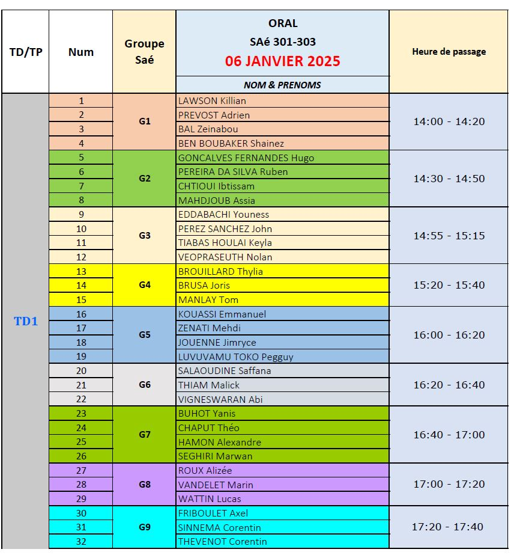
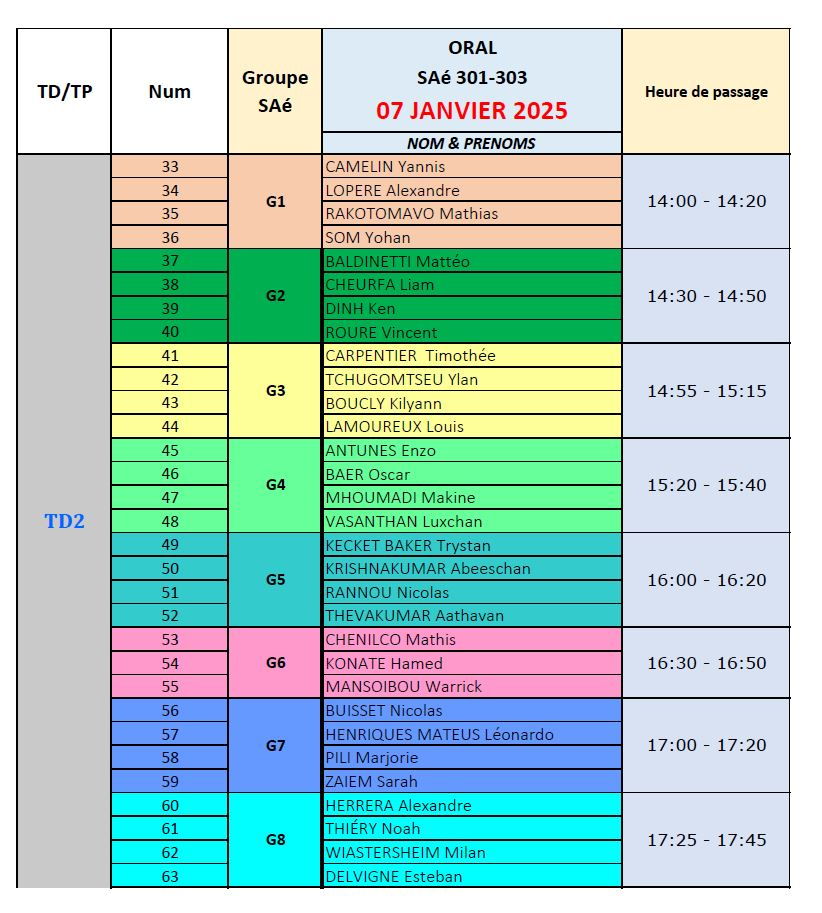

SAE303
SAE 303
Présentation
Contexte général de la SAé
Traitement des données
Organisation des ressources de la SAé
Oraux de la SAé 301-303
Planning des oraux
SAE303
<no title>
Planning des oraux
View page source
Planning des oraux

